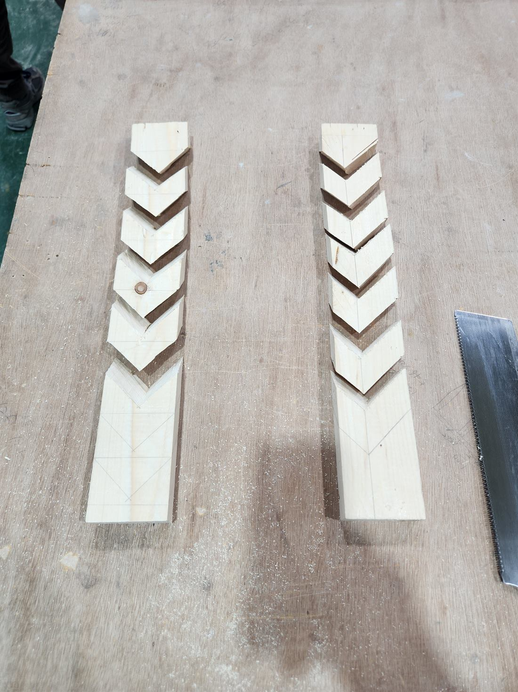
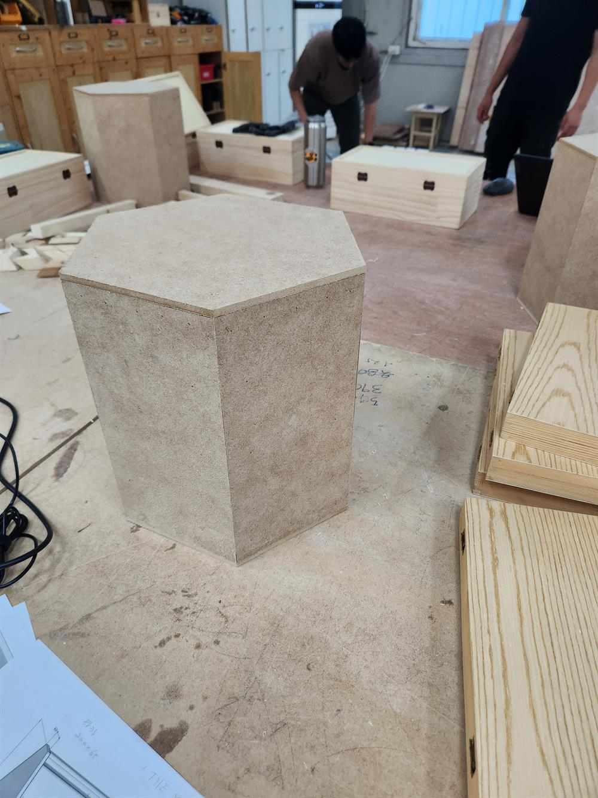
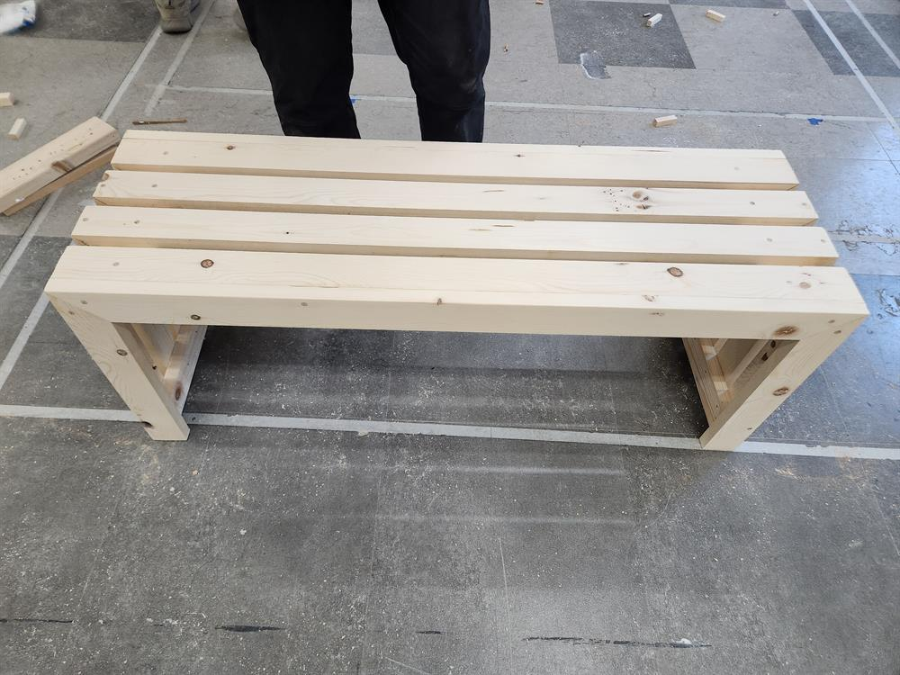
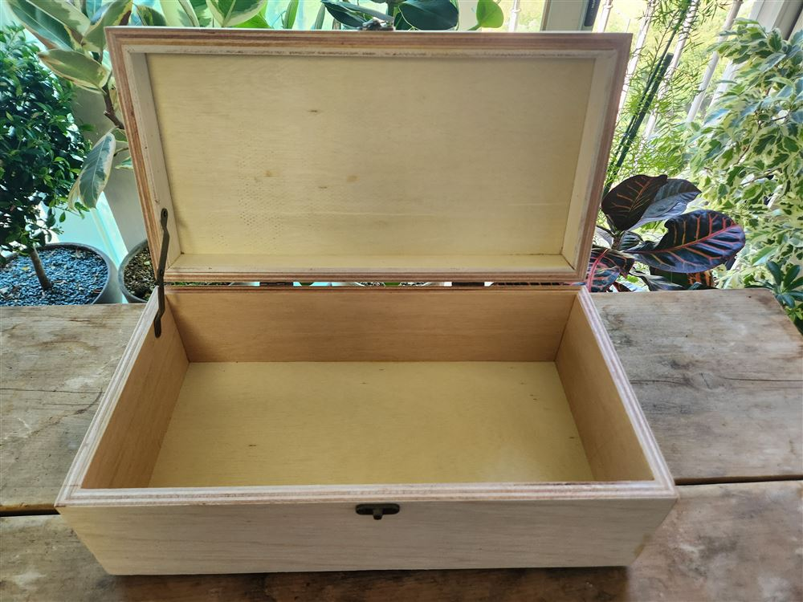
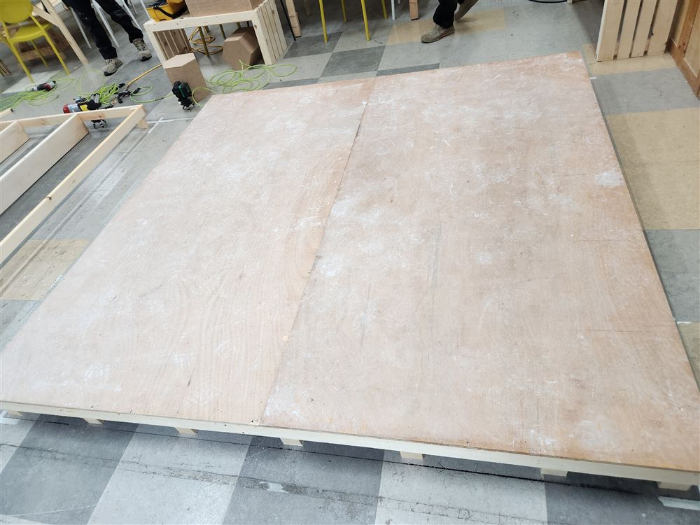
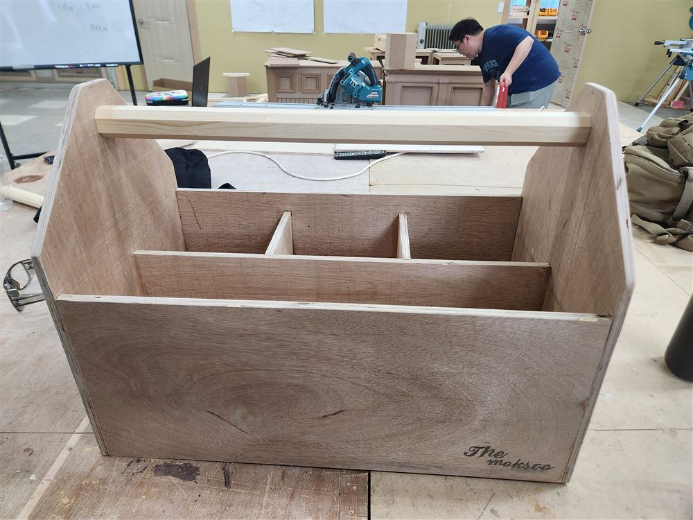
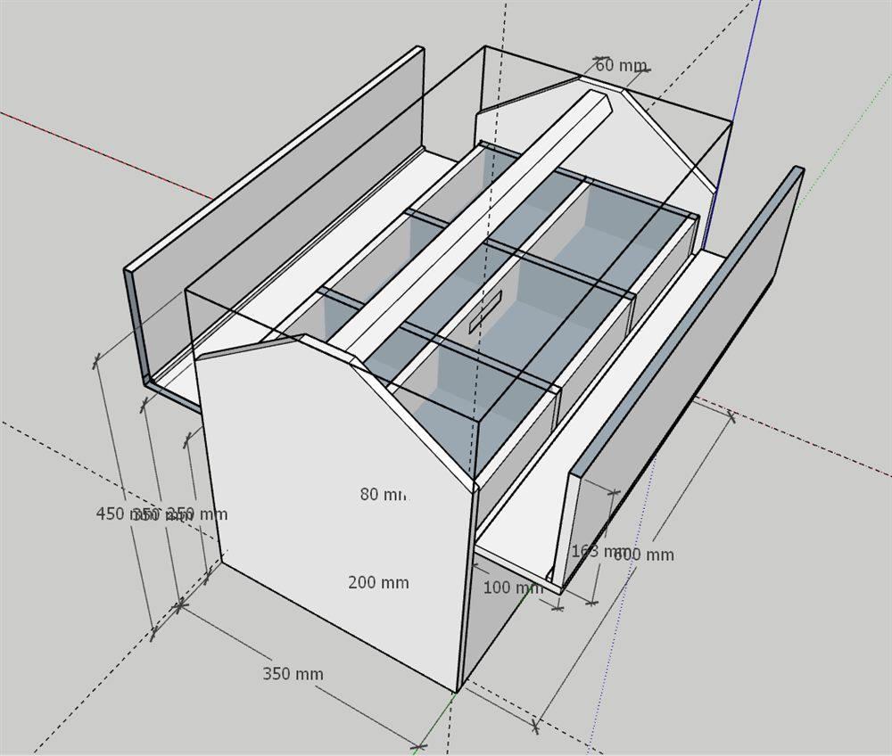
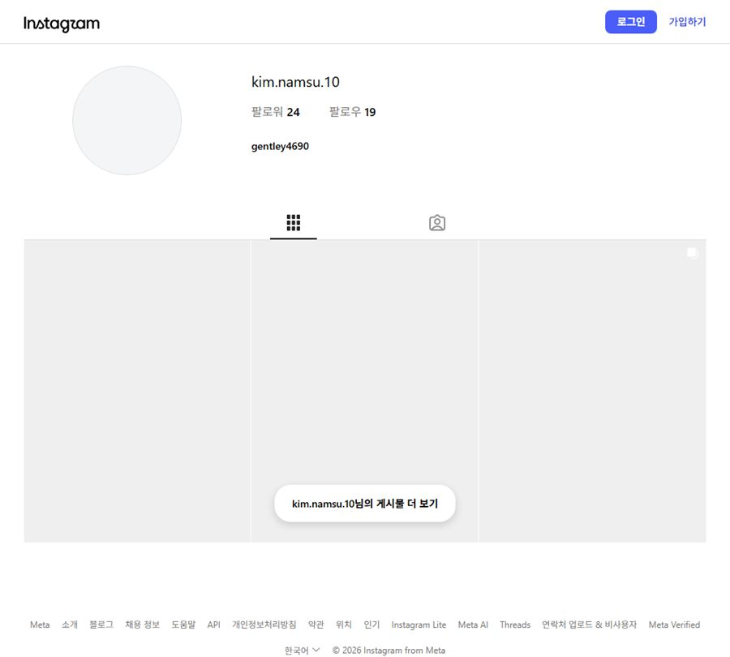
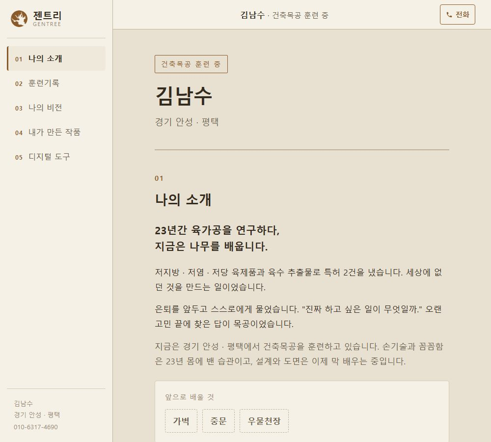
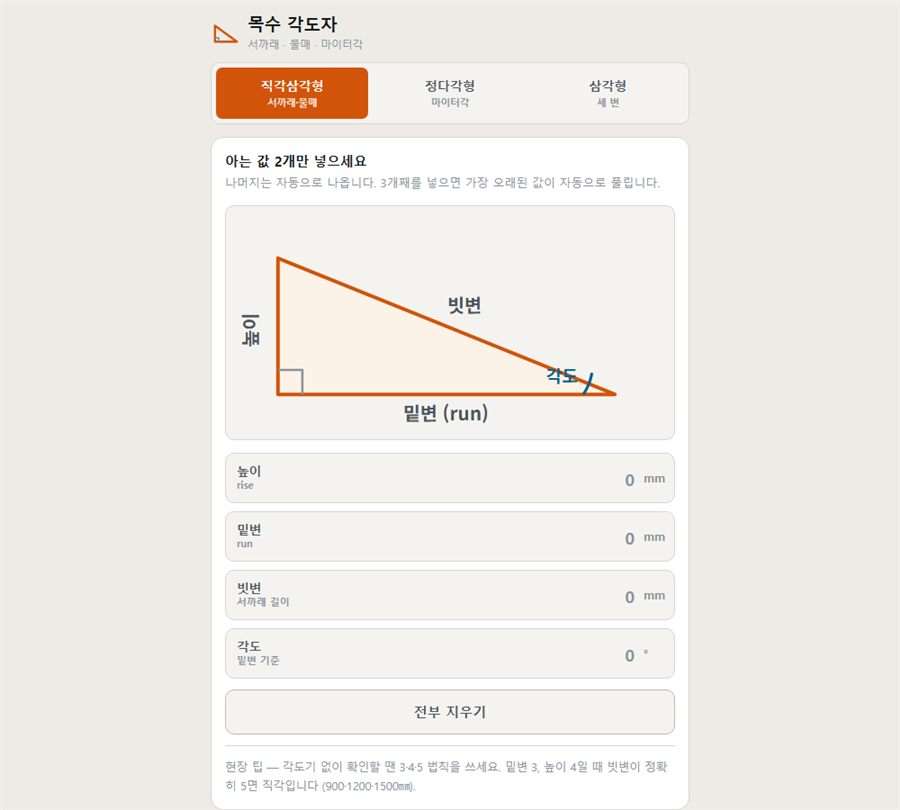

김남수
경기 안성 · 평택
나의 소개
23년간 육가공을 연구하다,
지금은 나무를 배웁니다.
저지방 · 저염 · 저당 육제품과 육수 추출물로 특허 2건을 냈습니다. 세상에 없던 것을 만드는 일이었습니다.
은퇴를 앞두고 스스로에게 물었습니다. "진짜 하고 싶은 일이 무엇일까." 오랜 고민 끝에 찾은 답이 목공이었습니다.
지금은 경기 안성 · 평택에서 건축목공을 훈련하고 있습니다. 손기술과 꼼꼼함은 23년 몸에 밴 습관이고, 설계와 도면은 이제 막 배우는 중입니다.
훈련기록
훈련하며 만든 것과 배운 것을 인스타그램에 그때그때 남기고 있습니다. 잘 나온 것도, 서투른 것도 그대로 올립니다.
인스타그램에서 훈련기록 보기톱질

나의 비전
오래 쓰는 것을 짓는 목수가 되려 합니다.
치수 하나, 마감 하나를 허투루 넘기지 않는 사람. 언젠가 나의 공방에서 사람들의 공간을 짓는 것이 목표입니다.
내가 만든 작품
육각기둥
여섯 면의 각을 하나하나 맞춰 세웠습니다.

원목 벤치
좌판과 다리를 짜 맞춘 벤치입니다.

보석함
경첩과 걸쇠까지 직접 달아 여닫이로 완성한 상자입니다.

바닥
멍에·장선을 짜고 트러스까지 올린 바닥 구조입니다.

공구함
스케치업으로 직접 설계한 도면 그대로 짠 박공 지붕 공구함입니다.

내가 만든 디지털 도구
스케치업
가로 600 · 세로 350 · 높이 450mm. 박공 지붕 안쪽으로 손잡이봉을 넣고, 톱과 망치는 긴 칸에, 타카와 트리머는 나눈 칸에 들어가도록 짰습니다.
치수 하나만 고치면 전체가 다시 그려지도록 스크립트로 만들어, 크기를 바꿔가며 여러 번 시험해 볼 수 있게 했습니다.

인스타그램
훈련 기록을 남기는 계정을 API로 직접 연동해봤습니다.

홈페이지
직접 만들었습니다. 나무를 다루는 법을 배우면서, 내 일을 알리는 도구도 스스로 만들어보고 있습니다.

사이트맵
홈페이지 구조가 복잡해지는 걸 스스로 관리하려고, 이드로우마인드 방식으로 직접 편집 가능한 마인드맵을 만들었습니다. 여기서 이름을 바꾸면 이 브라우저의 왼쪽 메뉴에도 바로 반영됩니다.
🌳 사이트맵 마인드맵 열기목수 각도자
서까래 각도·물매·다각형 마이터각을 현장에서 바로 구하는 계산기입니다. 휴대폰이나 PC에 앱으로 설치해두면 인터넷 없이도 씁니다.

📐 목수 각도자 열기